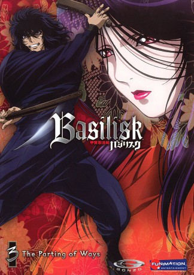

#4779 Basilisk Die Chroniken der Kouga Ninja
Alternativ: Basilisk: Kôga ninpô chô (Originaltitel)
 
 IMDB-Wertung: 8.0 / 10
IMDB-Wertung: 8.0 / 10  Metascore: 0
Metascore: 0 
Um einen neuen Shogun zu bestimmen, stürzen sich zwei befeindeten Ninja Clans in eine blutige Schlacht. Der über die Zeit angestaute Hass zwischen ihnen endet in einem gewaltigen Krieg der Ninjakünste.Zwischen den Fronten stehen die beiden Führer der Clans, ein junges Paar, Gennosuke Kouga und Oboro Iga, die sich vor dem Kriegsausbruch auf ihre Hochzeit vorbereitet haben. Die beiden Liebenden müssen sich entscheiden, ob sie ihre Liebe für den Krieg aufgeben oder sich gegen ihre Clans stellen.
Jahr: 2005
Dauer: 24 Minuten
FSK: 16
Land: Japan Studio: OVA FilmsTonspuren: DTS - ,
Untertitel: Deutsch,
Auflösung: 720p (1280x720) Größe: 578 MB
Genre: Drama, Fantasy, Animation/Trick
Regisseur: Takashi Okazaki
Drehbuch: Kellie Madison
Soundtrack:
Darsteller:
Datei: X:\HD-Anime-Serien\Basilisk Die Chroniken der Kouga Ninja\Basilisk Die Chroniken der Kouga Ninja E01 My Beloved Prepare to Die.mkv seit 15.11.2016
Festplatte: Gemischt-01+Anime
 Es gibt insgesamt 67 Filme in der Gruppe 'HD-Anime-Serien'
Es gibt insgesamt 67 Filme in der Gruppe 'HD-Anime-Serien'